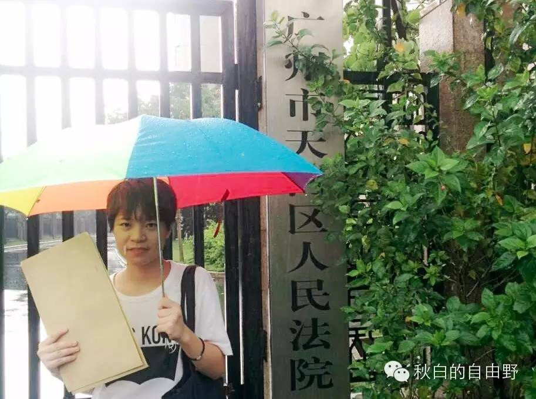
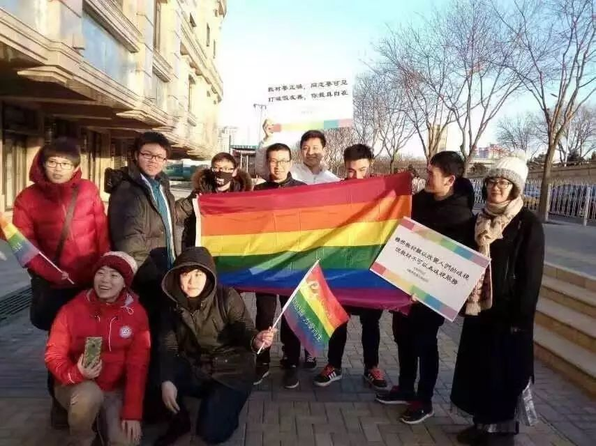
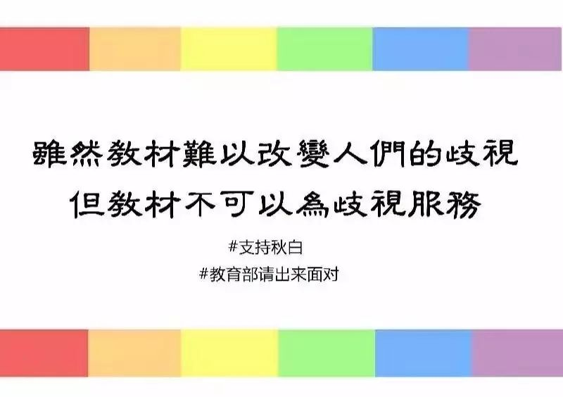
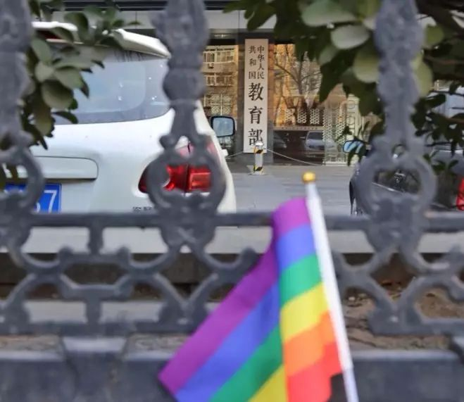
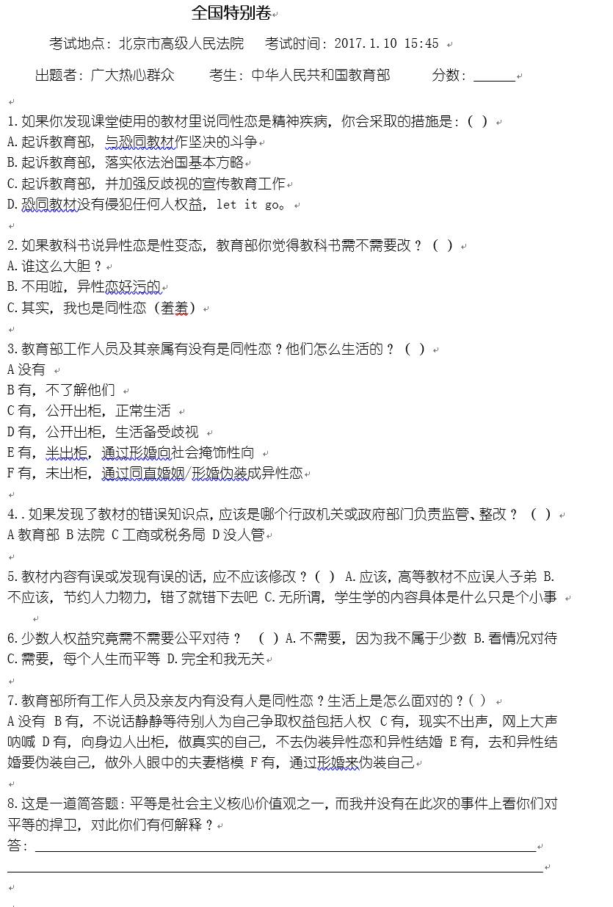

我是秋白，
因教科书污名同性恋三诉教育部的大学生。
春节过后，便是我大学本科生涯的最后半年，想不到几乎整个本科阶段都在为同志能够在教科书上正面呈现而“死磕”。身边的人都开始忙着考研，找工作，而对于我来说，“死磕”还没结束，最后的空余时间与精力，我愿意继续死磕错误教材，为性少数群体的平等受教育权而战。
除了教育部的监管，编者和出版社等方面还有大量行动值得我们一起去推动。2017年，我们一起定个小目标：推动10本错误教材的内容承诺改变吧。希望有你们的参与和捐赠，一起创造改变！
行动小回顾
2015年，在发现自己的同性恋倾向后，我试图从书本上寻找答案。然而在翻阅教科书时发现，许多教科书存在对同性恋错误的表述，如“同性恋是性变态，性指向障碍”等。 此后，我先后向学校图书馆、广东省教育厅及出版社反映，各方推脱责任。教材归谁管，错误内容怎么办？我希望教育部能主持公道，并申请了信息公开。因此，便和教育部开始了漫长的交涉。
一告：教育部说未听说过教材污名同性恋
2015年11月24日， 以庭前谈话的形式在北京市第一中级人民法院与教育部官员进行对话。庭上，教育部官员称从未收到关于教材恐同的举报，因此还没启动过相关的处理机制，建议秋白向教育部举报，随后会得到处理结果的。我选择撤诉。
二告：法院不予立案
2015年12月到2016年3月，多次寄举报信件教育部，但未收到回复。
2016年4月25日，再告教育部不作为，法院未立案。
三告：教育部否认教材侵害受教育权
一审：2016年9月12日，在北京市第一中级人民法院公开庭审，教育部多次以“教材监管事项的处理没有侵害原告的人身权、财产权、受教育权”作为抗辩理由，推卸责任。最后法院判原告一审败诉。
二审：2017年1月10日，在北京市高级人民法院二审开庭。在庭上教育部不否认伤害同性恋群体，但对秋白的伤害要“好多个转折”。
2017.1.10| 执着的秋白 2 | 中文 | 4 min
（欲观看三次开庭的现场视频，请点击文末阅读原文）
教育部从不知道教材存在污名问题，到否认教材的伤害，再到现在承认教材伤害同性恋群体，我们通过一次次诉讼迫使它不得不发生“改变”。
除此之外，相关新闻被国内外媒体报道不少于300次，关注度超千万人次，被称为“中国LGBT受教育权第一案”，2015年入选“中国十大宪法性案件”、以上种种皆是我们一起努力的结果。
从“我”到“我们” 什么在变
时常，有人质疑这些诉讼没用的，不管怎么告都会输。
真的没有用吗？
两年全球300多篇原创报道，不少于几千万人阅读，难道不会在一定程度上消除错误教材带来的歧视影响？不会提升同志议题在媒体上的可见度？难道我们的努力没有给1000多后台留言的同志以及关注的粉丝带去鼓励与力量？过去一年里有1000多人参与捐款，先后80多同志给教育部寄毒教材举 报信件，100多人参与撑秋白漂流瓶活动，难道这没有给更多人以启蒙与觉醒？
记得2015年5月决定起诉广东高等教育出版社的时候，那几天都在下暴雨，而且广州天河区人民法院还蛮远的，总而言之，我可以找到千百个理由拖延这件事情。我心里焦虑万分，心想着如果被动等待雨期过的话事情又要延期了啊，坐以待毙不如起而行之，于是撑着把彩虹伞，拿着起诉状，我直奔法院而去。
当我在起诉理由一栏里写“教材污名同性恋……”时，身旁的法院工作人员立刻紧张起来，她仔细看了我所有材料，询问领导意见，最后丢给我一句“我们内部讨论一下，你回去等通知”。那时我有点不知所措，僵持了一阵后默默离开法院。随后还被告知不予立案，我把这些过程、不立案的结果发布在微信公号后也没有引起极大的关注，因此起诉出版社的事情默默地不了了之。

摄于2015.5，广州市天河区人民法院（那时我脸还有肉（zhong））
然而，通过之后不断地坚持，我看到越来越多人参与进来。
2015年11月在北京中级人民法院第一次开庭，尽管北京下着雪，温度极低，仍然有不少支持者到现场表达支持。
2016年9月一审开庭，一名志愿者在到达法院之前还担心出柜问题，犹豫要不要协助扬彩虹旗及举牌，没料到到了法院门口后，她二话不说，拿着口号牌站在了镜头面前。
而2017年1月二审时，有同伴特意请假从天津过来帮忙，有北京的姬友们赶过来只为说一句，“我觉得教科书的更正真的非常重要，我不希望我的父母继续被这些错误的知识误导了，这些错误的知识也是对父母的伤害啊”。

摄于2017.1.10 北京市高级人民法院外
从两年前一个人去法院立案，到如今是我们一群人走到法院门口，为性少数群体的权益打气加油。尽管诉讼的结果不甚理想，可是通过一次次的行动现场，我们分享各自的看法、诉求以及建议，这些对话使我们看到彼此之间的痛苦与力量，从而建立联结以及赋权。高墙无法一次就推倒，在它倒之前，我们必须由一个人形成一群人，彼此联结与坚持，这才是诉讼带给社群最大的改变。
官司也许会输，但我们不会永远都输。
2017的改变 需要你的支持
2016年，是我身体与精神最不佳的一年，失眠，病痛常常缠绕着我。有时候还没调整好状态，便要拖着疲惫的身体投入行动当中，甚至在收到2017.1.10下午二审开庭的通知时，我还在犹豫是否要再次进京。咬咬牙决定还是去吧，这可能是和教育部官员最后一次在法庭上正面交锋，去的话还能给他们一点压力。

而2017年，是我大学本科生涯的最后一个半年。从大一到大四，几乎整个本科阶段都在死磕教科书，别人已经在忙着考研，找工作，而我愿意把空闲精力都放在教材上。然而到目前为止，我还没看到任何一本教材的真正修改，是这两年多的时间还不够吗，是我们还不够努力吗？好像也不尽是，不努力的似乎是那些写教材管教材的人，那我们就推动他们做出改变呗。
既然已经走到这里，那就走得更远一点吧。
接下来的至少一年时间里，我还将继续坚持下去，为性少数在教材中正名而不懈努力。
具体我将会做的是：
1.“毒教材”监测：购买最新出版的涉及性少数的高校教材（医学类、大学生心理健康类，心理学类），并进行全面检视性查阅，整理以及分析。
购买教材：30元/本*100本=3000元；
邮寄费：15元/次*100次=1500元；
2.错误教材编者的游说：通过电话、面对面游说等方式，2017年内让5-10本错误教材的编者承诺修订错误内容，并提供正确内容的撰写参考。
通讯费：200元（总计）；
邮寄费：10人*50元=500元；
面谈城际交通费：300元*2程（往返）*5编者=3000元；
面谈的住宿费：200元/间/晚*2晚*5城市=2000元
3.各地毒教材举报、建议信：而仍未修改的教材，将用2个月时间通过写建议信件、申请信息公开、打电话向其编者、出版社、主管部门反映问题，寻求对话机会，并后续跟进。
信件打印/印刷费：20元/份*100份=2000元；
邮寄费：10元/本教材的跟进*2次往返邮寄*100次=2000元；
通讯费：总共300元；
友善/已修改教材的赠小红花行动：50元/次*10次=500 元；
4.继续跟进教育部：虽然教育部这名同学屡教不改让人操碎了心，但是不能放弃治疗，keep fighting!
律师诉讼费：3000元
开庭/对话的城际交通费：2000元/次（北京至广州往返1次）
开庭期间住宿费：200元/晚*3间（6人）*3晚=1800元；
资料物资费：300元
5.教科书行动分享会：去5个城市做教科书议题分享，把教科书议题带到更多的城市里去。
城际交通费（火车/高铁二等座）：300元/*2往返*5城市=3000 元；
场地费：200元*5城市=1000元；
住宿费：150/晚*2晚*5城市=3000元；
分享资料费：共计200元；
总计29300.00元。
这些行动都需要经费支持，请大家有钱出钱，吃土的也请转发，一起蓄力下一场教材保卫战！
欢迎扫码入群，在群内实时分享筹款进展和缺口情况，以及2017教科书进展和财务公开。同时，筹款目标不可能只靠你我就可实现，那想不想试试第一次当“筹款员”的滋味？加群吧，群内有筹款教学指南，这也是支持秋白的一种最直接的方式。
大彩蛋
写在教育部案二审结束后
2017年1月10日是教育部性倾向歧视案二审开庭的日子，目前我还没收到判决结果。因为不公开审理，庭上的100个旁听席空空如也，好多想来旁听的同志们只能被挡在法庭之外。
教育部官员在庭上说“秋白并不是教科书的直接受害者，教科书说同性恋是病，说的是整个同性恋群体，其带来的伤害，是经过好几个转折，才到了秋白身上”，我在法庭上立即回应，“我所用的教材明确写着同性恋是性变态，老师把这个观点写在PPT中进行教学，而且老师也在课堂上说同性恋是病。不管是教材的污名描述，ppt上呈现的内容还是老师的恐同言论，这三者当中，错误的教材才是造成这些伤害的根源啊。既然教育部承认带来伤害，那就应该解决带来这些伤害的根源！”

期待教育部勇敢“出柜”的一天
相比于第一次开庭时发言的羞涩，到第二次的害怕，这一次我回应得振振有词，教育部的表态着实令我太失望，其作为教育界的一把手，遇到问题时不是积极寻求解决办法反而是绞尽脑汁想着如何逃脱责任。其间我也看到自身的成长，学会如何更好地表达感受及诉求，学会如何更好利用法律途径寻求平等对话的机会，以令失责者汗颜。
开庭之前，我向大家征集“考题”，承诺会在法庭里让教育部“作答”，秋白案二审开庭|当开庭碰上期末季，一起给教育部出考题！（链接可戳）。因此，临结束时我追向教育部，“如果教科书说异性恋是病，你们觉得应不应该改？”
教育部回答：“不知道！别问我！”
教育部好傲娇orz…后续的问题都无法好好愉快提问了…
以下为根据征集整理的考卷：

在等待二审判决结果的同时，我们一起给教育部傲娇的“答卷”方式打个分呗，把期末成绩单寄给教育部！
最后迟到的一句，祝大家新年快乐。打好春节大作战，提升战斗力，然后迎接咱们的下一场教材保卫战！等你哦~
戳阅读原文，《秋白三告教育部|三集全》